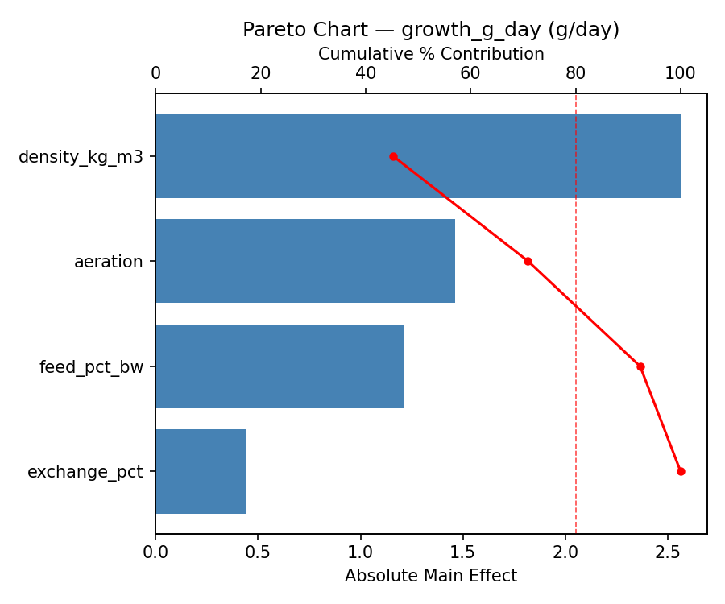
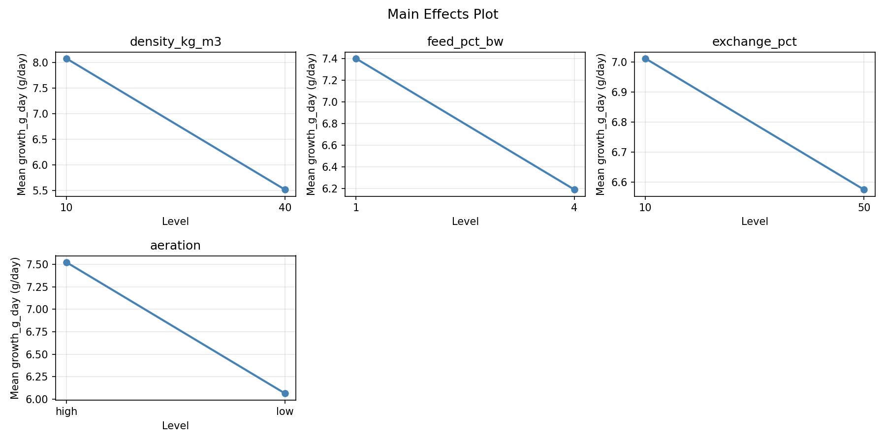
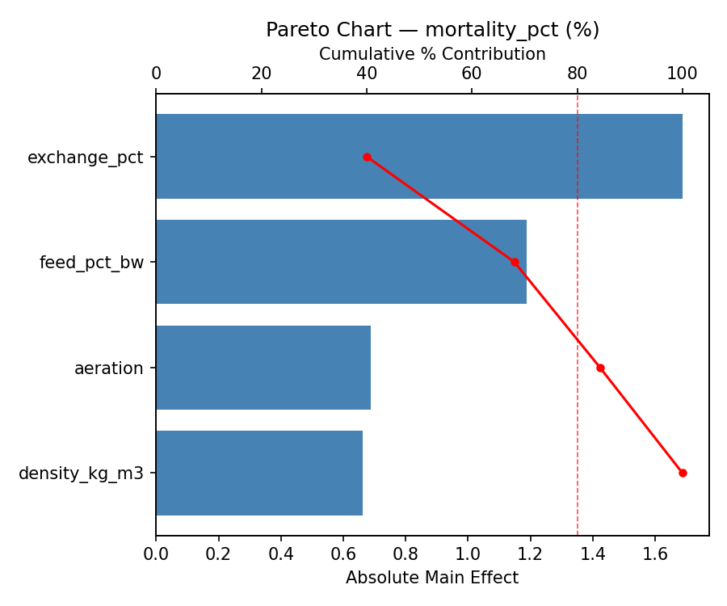
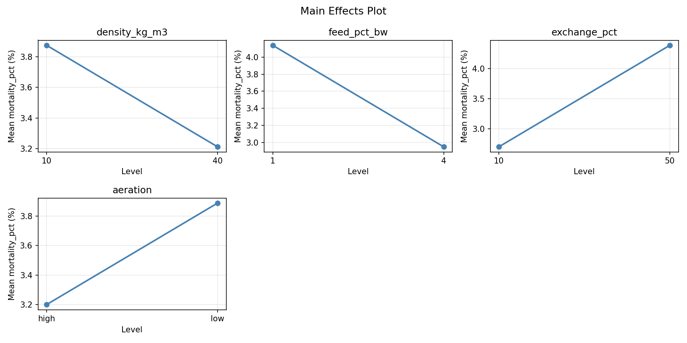
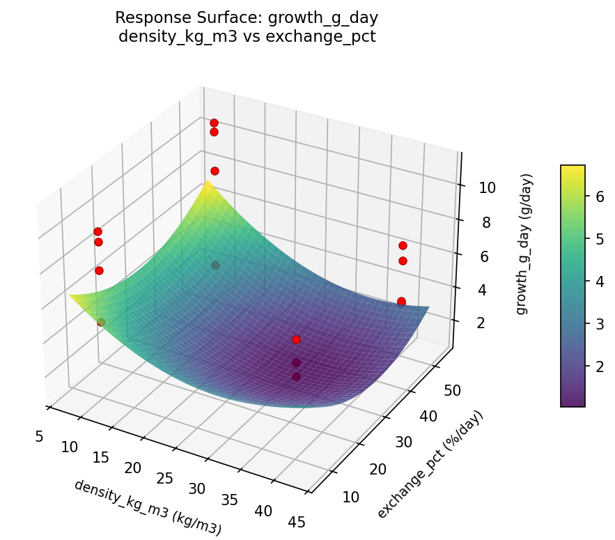
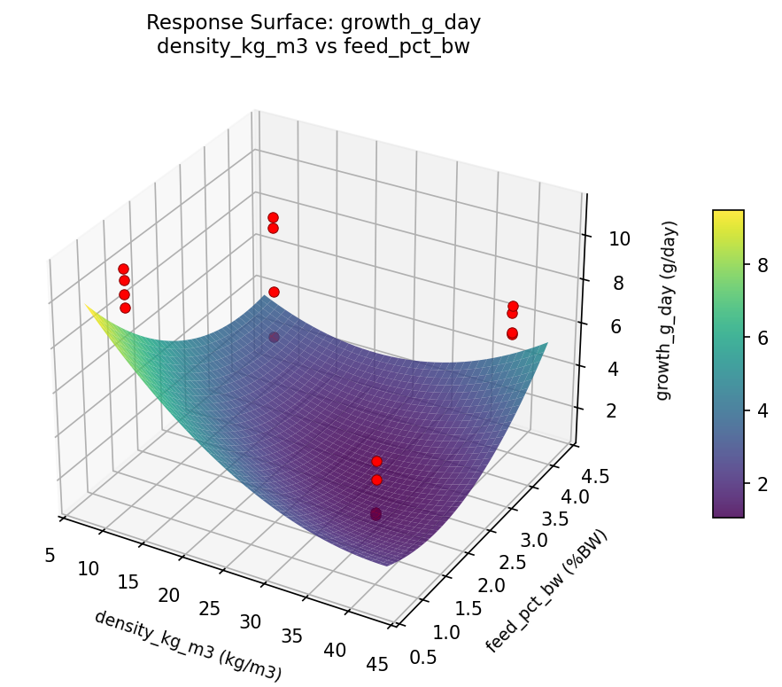
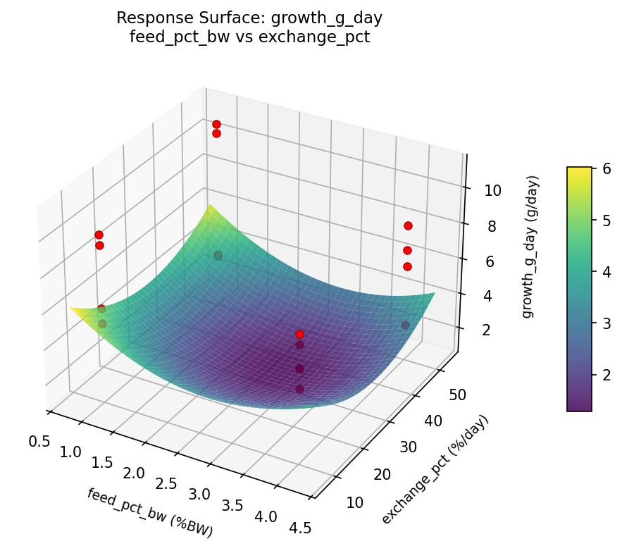
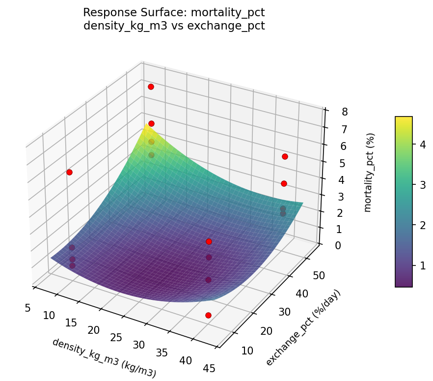
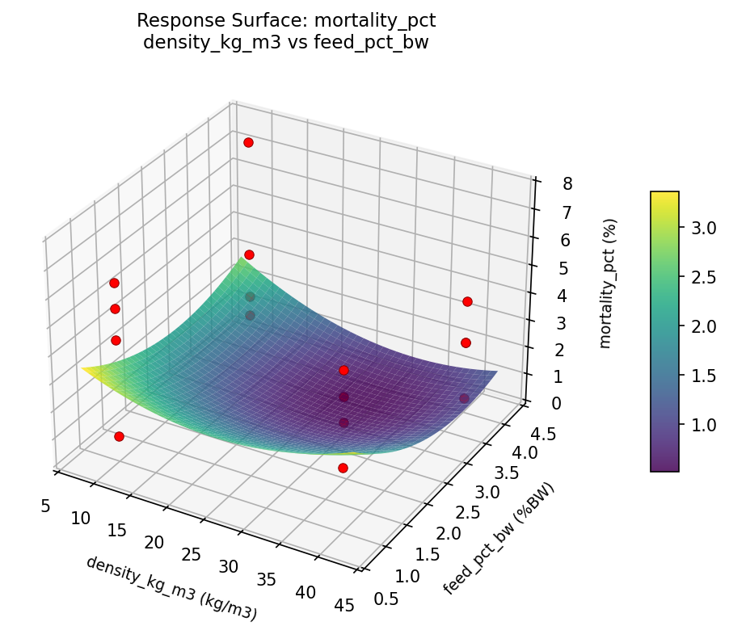
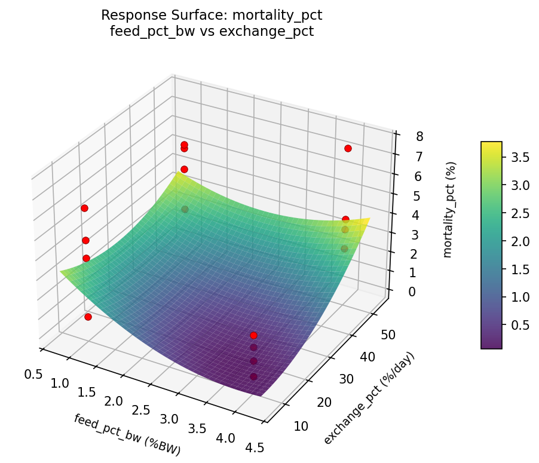

Summary
This experiment investigates fish farm stocking density. Full factorial of stocking density, feeding rate, water exchange, and aeration to maximize growth and minimize mortality.
The design varies 4 factors: density kg m3 (kg/m3), ranging from 10 to 40, feed pct bw (%BW), ranging from 1 to 4, exchange pct (%/day), ranging from 10 to 50, and aeration, ranging from low to high. The goal is to optimize 2 responses: growth g day (g/day) (maximize) and mortality pct (%) (minimize). Fixed conditions held constant across all runs include species = atlantic_salmon, cage = 10m_pen.
A full factorial design was used to explore all 16 possible combinations of the 4 factors at two levels. This guarantees that every main effect and interaction can be estimated independently, at the cost of a larger experiment (16 runs).
Quadratic response surface models were fitted to capture potential curvature and factor interactions. The RSM contour plots below visualize how pairs of factors jointly affect each response.
Key Findings
For growth g day, the most influential factors were density kg m3 (45.2%), aeration (25.8%), feed pct bw (21.4%). The best observed value was 11.1 (at density kg m3 = 10, feed pct bw = 4, exchange pct = 50).
For mortality pct, the most influential factors were exchange pct (39.9%), feed pct bw (28.1%), aeration (16.3%). The best observed value was 0.4 (at density kg m3 = 10, feed pct bw = 4, exchange pct = 10).
Recommended Next Steps
- Consider whether any fixed factors should be varied in a future study.
Experimental Setup
Factors
| Factor | Low | High | Unit |
|---|
density_kg_m3 | 10 | 40 | kg/m3 |
feed_pct_bw | 1 | 4 | %BW |
exchange_pct | 10 | 50 | %/day |
aeration | low | high | |
Fixed: species = atlantic_salmon, cage = 10m_pen
Responses
| Response | Direction | Unit |
|---|
growth_g_day | ↑ maximize | g/day |
mortality_pct | ↓ minimize | % |
Configuration
{
"metadata": {
"name": "Fish Farm Stocking Density",
"description": "Full factorial of stocking density, feeding rate, water exchange, and aeration to maximize growth and minimize mortality"
},
"factors": [
{
"name": "density_kg_m3",
"levels": [
"10",
"40"
],
"type": "continuous",
"unit": "kg/m3"
},
{
"name": "feed_pct_bw",
"levels": [
"1",
"4"
],
"type": "continuous",
"unit": "%BW"
},
{
"name": "exchange_pct",
"levels": [
"10",
"50"
],
"type": "continuous",
"unit": "%/day"
},
{
"name": "aeration",
"levels": [
"low",
"high"
],
"type": "categorical",
"unit": ""
}
],
"fixed_factors": {
"species": "atlantic_salmon",
"cage": "10m_pen"
},
"responses": [
{
"name": "growth_g_day",
"optimize": "maximize",
"unit": "g/day"
},
{
"name": "mortality_pct",
"optimize": "minimize",
"unit": "%"
}
],
"settings": {
"operation": "full_factorial",
"test_script": "use_cases/254_fish_farm_stocking/sim.sh"
}
}
Experimental Matrix
The Full Factorial Design produces 16 runs. Each row is one experiment with specific factor settings.
| Run | density_kg_m3 | feed_pct_bw | exchange_pct | aeration |
|---|
| 1 | 10 | 4 | 50 | high |
| 2 | 40 | 1 | 10 | high |
| 3 | 10 | 4 | 10 | high |
| 4 | 10 | 4 | 50 | low |
| 5 | 40 | 4 | 50 | low |
| 6 | 40 | 1 | 50 | low |
| 7 | 40 | 4 | 10 | low |
| 8 | 40 | 1 | 10 | low |
| 9 | 10 | 1 | 10 | high |
| 10 | 10 | 1 | 50 | low |
| 11 | 40 | 4 | 10 | high |
| 12 | 40 | 4 | 50 | high |
| 13 | 10 | 4 | 10 | low |
| 14 | 40 | 1 | 50 | high |
| 15 | 10 | 1 | 10 | low |
| 16 | 10 | 1 | 50 | high |
Step-by-Step Workflow
1
Preview the design
$ python doe.py info --config use_cases/254_fish_farm_stocking/config.json
2
Generate the runner script
$ python doe.py generate --config use_cases/254_fish_farm_stocking/config.json \
--output use_cases/254_fish_farm_stocking/results/run.sh --seed 42
3
Execute the experiments
$ bash use_cases/254_fish_farm_stocking/results/run.sh
4
Analyze results
$ python doe.py analyze --config use_cases/254_fish_farm_stocking/config.json
5
Get optimization recommendations
$ python doe.py optimize --config use_cases/254_fish_farm_stocking/config.json
ℹ
Multi-Objective Optimization
This experiment has conflicting objectives (growth_g_day (↑), mortality_pct (↓)). Use --multi to find the best compromise using desirability functions:
$ python doe.py optimize --config use_cases/254_fish_farm_stocking/config.json --multi
6
Generate the HTML report
$ python doe.py report --config use_cases/254_fish_farm_stocking/config.json \
--output use_cases/254_fish_farm_stocking/results/report.html
Real-World Experiment Workflow
ℹ
Physical Marine & Environmental Test? Use the Manual Workflow
Marine experiments involve real water conditions, living organisms, and environmental factors that require field testing. The simulation script above is for demonstration. For your real experiments, use record, status, and export-worksheet.
$ python doe.py export-worksheet --config use_cases/254_fish_farm_stocking/config.json \
--format csv --output worksheet.csv
$ python doe.py status --config use_cases/254_fish_farm_stocking/config.json
$ python doe.py record --config use_cases/254_fish_farm_stocking/config.json --run 1
$ python doe.py analyze --config use_cases/254_fish_farm_stocking/config.json --partial
$ python doe.py analyze --config use_cases/254_fish_farm_stocking/config.json
$ python doe.py optimize --config use_cases/254_fish_farm_stocking/config.json
$ python doe.py report --config use_cases/254_fish_farm_stocking/config.json \
--output report.html
✔
Works Without a Test Script
The analysis pipeline doesn't care how results were produced. Record your measurements with record, and the full analysis, optimization, and reporting pipeline works identically. Use --partial to get early insights before all runs are complete.
Features Exercised
| Feature | Value |
|---|
| Design type | full_factorial |
| Factor types | continuous (3), categorical (1) |
| Arg style | double-dash |
| Responses | 2 (growth_g_day ↑, mortality_pct ↓) |
| Total runs | 16 |
Analysis Results
Generated from actual experiment runs using the DOE Helper Tool.
Response: growth_g_day
Top factors: density_kg_m3 (45.2%), aeration (25.8%), feed_pct_bw (21.4%).
Pareto Chart

Main Effects Plot

Response: mortality_pct
Top factors: exchange_pct (39.9%), feed_pct_bw (28.1%), aeration (16.3%).
Pareto Chart

Main Effects Plot

Response Surface Plots
3D surfaces fitted with quadratic RSM. Red dots are observed data points.
growth g day density kg m3 vs exchange pct

growth g day density kg m3 vs feed pct bw

growth g day feed pct bw vs exchange pct

mortality pct density kg m3 vs exchange pct

mortality pct density kg m3 vs feed pct bw

mortality pct feed pct bw vs exchange pct

Full Analysis Output
RSM surface: rsm_growth_g_day_density_kg_m3_vs_feed_pct_bw.png
RSM surface: rsm_growth_g_day_density_kg_m3_vs_exchange_pct.png
RSM surface: rsm_growth_g_day_feed_pct_bw_vs_exchange_pct.png
RSM surface: rsm_mortality_pct_density_kg_m3_vs_feed_pct_bw.png
RSM surface: rsm_mortality_pct_density_kg_m3_vs_exchange_pct.png
RSM surface: rsm_mortality_pct_feed_pct_bw_vs_exchange_pct.png
=== Main Effects: growth_g_day ===
Factor Effect Std Error % Contribution
--------------------------------------------------------------
density_kg_m3 -2.5625 0.6496 45.2%
aeration -1.4625 0.6496 25.8%
feed_pct_bw -1.2125 0.6496 21.4%
exchange_pct -0.4375 0.6496 7.7%
=== Interaction Effects: growth_g_day ===
Factor A Factor B Interaction % Contribution
------------------------------------------------------------------------
density_kg_m3 feed_pct_bw 3.1875 52.3%
feed_pct_bw aeration -1.2625 20.7%
density_kg_m3 aeration 0.6875 11.3%
density_kg_m3 exchange_pct -0.5875 9.6%
exchange_pct aeration -0.3375 5.5%
feed_pct_bw exchange_pct -0.0375 0.6%
=== Summary Statistics: growth_g_day ===
density_kg_m3:
Level N Mean Std Min Max
------------------------------------------------------------
10 8 8.0750 2.9717 2.6000 11.1000
40 8 5.5125 1.3726 3.5000 7.2000
feed_pct_bw:
Level N Mean Std Min Max
------------------------------------------------------------
1 8 7.4000 3.2045 3.5000 11.1000
4 8 6.1875 1.8326 2.6000 8.3000
exchange_pct:
Level N Mean Std Min Max
------------------------------------------------------------
10 8 7.0125 1.9387 4.8000 10.0000
50 8 6.5750 3.2557 2.6000 11.1000
aeration:
Level N Mean Std Min Max
------------------------------------------------------------
high 8 7.5250 2.2525 3.6000 11.1000
low 8 6.0625 2.8585 2.6000 10.6000
=== Main Effects: mortality_pct ===
Factor Effect Std Error % Contribution
--------------------------------------------------------------
exchange_pct 1.6875 0.5144 39.9%
feed_pct_bw -1.1875 0.5144 28.1%
aeration 0.6875 0.5144 16.3%
density_kg_m3 -0.6625 0.5144 15.7%
=== Interaction Effects: mortality_pct ===
Factor A Factor B Interaction % Contribution
------------------------------------------------------------------------
feed_pct_bw aeration -2.0375 39.2%
feed_pct_bw exchange_pct 1.2125 23.3%
density_kg_m3 exchange_pct -0.9625 18.5%
density_kg_m3 feed_pct_bw -0.5375 10.3%
density_kg_m3 aeration 0.2375 4.6%
exchange_pct aeration -0.2125 4.1%
=== Summary Statistics: mortality_pct ===
density_kg_m3:
Level N Mean Std Min Max
------------------------------------------------------------
10 8 3.8750 2.4760 0.8000 7.6000
40 8 3.2125 1.6401 0.4000 5.6000
feed_pct_bw:
Level N Mean Std Min Max
------------------------------------------------------------
1 8 4.1375 1.8423 0.8000 6.3000
4 8 2.9500 2.2071 0.4000 7.6000
exchange_pct:
Level N Mean Std Min Max
------------------------------------------------------------
10 8 2.7000 2.0702 0.4000 6.3000
50 8 4.3875 1.7772 2.2000 7.6000
aeration:
Level N Mean Std Min Max
------------------------------------------------------------
high 8 3.2000 2.0826 0.8000 7.6000
low 8 3.8875 2.1128 0.4000 6.3000
Pareto chart (growth_g_day): use_cases/254_fish_farm_stocking/results/analysis/pareto_growth_g_day.png
Pareto chart (mortality_pct): use_cases/254_fish_farm_stocking/results/analysis/pareto_mortality_pct.png
Main effects (growth_g_day): use_cases/254_fish_farm_stocking/results/analysis/main_effects_growth_g_day.png
Main effects (mortality_pct): use_cases/254_fish_farm_stocking/results/analysis/main_effects_mortality_pct.png
Optimization Recommendations
=== Optimization: growth_g_day ===
Direction: maximize
Best observed run: #12
density_kg_m3 = 10
feed_pct_bw = 4
exchange_pct = 50
aeration = low
Value: 11.1
RSM Model (linear, R² = 0.1520, Adj R² = -0.1563):
Coefficients:
intercept +6.7938
density_kg_m3 -0.5063
feed_pct_bw -0.1563
exchange_pct +0.4062
aeration -0.7188
RSM Model (quadratic, R² = 0.6165, Adj R² = -4.7527):
Coefficients:
intercept +1.3588
density_kg_m3 -0.5062
feed_pct_bw -0.1563
exchange_pct +0.4063
aeration -0.7188
density_kg_m3*feed_pct_bw -0.2562
density_kg_m3*exchange_pct -0.3437
density_kg_m3*aeration -0.1938
feed_pct_bw*exchange_pct +1.4313
feed_pct_bw*aeration +0.7813
exchange_pct*aeration +0.2438
density_kg_m3^2 +1.3588
feed_pct_bw^2 +1.3588
exchange_pct^2 +1.3588
aeration^2 +1.3588
Curvature analysis:
aeration coef=+1.3588 convex (has a minimum)
feed_pct_bw coef=+1.3588 convex (has a minimum)
exchange_pct coef=+1.3588 convex (has a minimum)
density_kg_m3 coef=+1.3588 convex (has a minimum)
Notable interactions:
feed_pct_bw*exchange_pct coef=+1.4313 (synergistic)
feed_pct_bw*aeration coef=+0.7813 (synergistic)
density_kg_m3*exchange_pct coef=-0.3437 (antagonistic)
Predicted optimum (from linear model):
density_kg_m3 = 10
feed_pct_bw = 1
exchange_pct = 50
aeration = high
Predicted value: 8.5813
Model quality: Weak fit — consider adding center points or using a different design.
Factor importance:
1. aeration (effect: -1.4, contribution: 40.2%)
2. density_kg_m3 (effect: -1.0, contribution: 28.3%)
3. exchange_pct (effect: 0.8, contribution: 22.7%)
4. feed_pct_bw (effect: -0.3, contribution: 8.7%)
=== Optimization: mortality_pct ===
Direction: minimize
Best observed run: #16
density_kg_m3 = 10
feed_pct_bw = 4
exchange_pct = 10
aeration = high
Value: 0.4
RSM Model (linear, R² = 0.0515, Adj R² = -0.2934):
Coefficients:
intercept +3.5438
density_kg_m3 -0.4063
feed_pct_bw +0.0687
exchange_pct +0.0437
aeration +0.1812
RSM Model (quadratic, R² = 0.5839, Adj R² = -5.2417):
Coefficients:
intercept +0.7087
density_kg_m3 -0.4062
feed_pct_bw +0.0687
exchange_pct +0.0438
aeration +0.1813
density_kg_m3*feed_pct_bw +0.3937
density_kg_m3*exchange_pct -0.8313
density_kg_m3*aeration -0.8937
feed_pct_bw*exchange_pct +0.5688
feed_pct_bw*aeration -0.2687
exchange_pct*aeration -0.2687
density_kg_m3^2 +0.7088
feed_pct_bw^2 +0.7088
exchange_pct^2 +0.7088
aeration^2 +0.7088
Curvature analysis:
exchange_pct coef=+0.7088 convex (has a minimum)
density_kg_m3 coef=+0.7088 convex (has a minimum)
feed_pct_bw coef=+0.7088 convex (has a minimum)
aeration coef=+0.7088 convex (has a minimum)
Notable interactions:
density_kg_m3*aeration coef=-0.8937 (antagonistic)
density_kg_m3*exchange_pct coef=-0.8313 (antagonistic)
feed_pct_bw*exchange_pct coef=+0.5688 (synergistic)
density_kg_m3*feed_pct_bw coef=+0.3937 (synergistic)
Predicted optimum (from linear model):
density_kg_m3 = 10
feed_pct_bw = 4
exchange_pct = 50
aeration = low
Predicted value: 4.2438
Model quality: Weak fit — consider adding center points or using a different design.
Factor importance:
1. density_kg_m3 (effect: -0.8, contribution: 58.0%)
2. aeration (effect: 0.4, contribution: 25.9%)
3. feed_pct_bw (effect: 0.1, contribution: 9.8%)
4. exchange_pct (effect: 0.1, contribution: 6.2%)